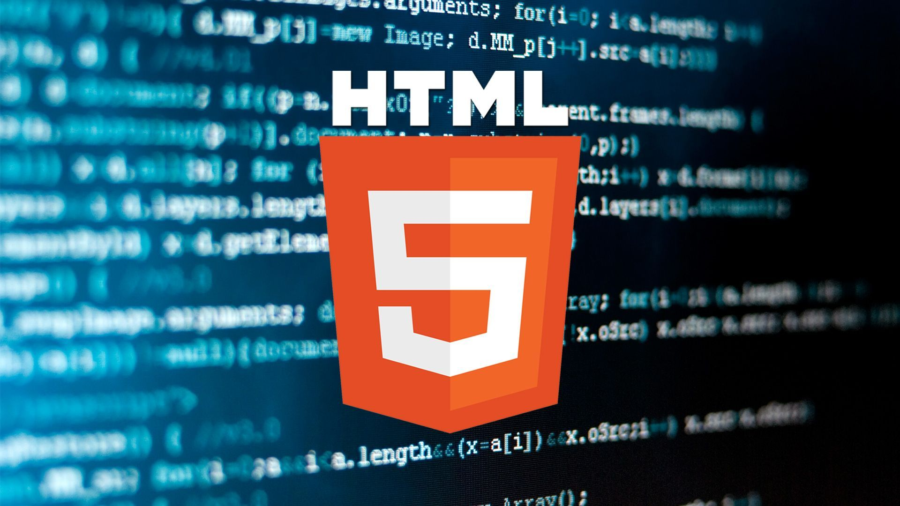
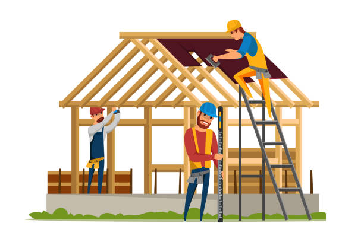
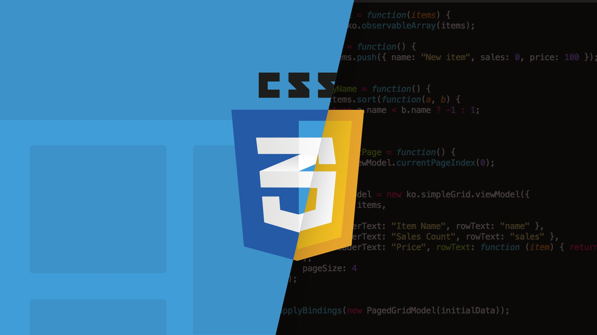
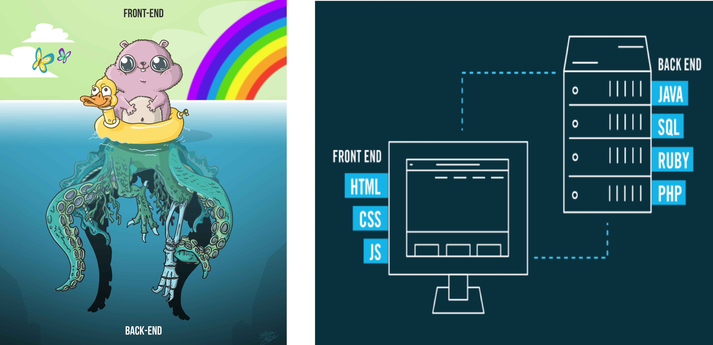

چیست؟ HTML
(hyper text markup language) مخفف زبان نشانه گذاری فرا متنی است HTML
اما اشتباه نکنید.در حقیقت این یک زبان برنامه نویسی نیست چرا که زبان های برنامهنویسی دارای مجموعهای از قواعد هستند که بوسیله یک سری دستورات مانند شرطها، متغیرها و… به یک سیستم کامپیوتری میگویند که باید چه کاری را انجام دهد کاری که در حقیقت انجام میدهد توصیف اسکلت و ساختمان یک سایت برای مرورگر است پس برای همین هم نمیتوان به ان لقب زبان برنامه نویسی را داد اما چیزی که میتوانیم بگویم این است که این یک زبان نشانه گذاری است. این مثال را در نظر بگیرید. اگر بخواهیم یک ساختمان بسازیم اول جا و مکان ان را انتخاب میکنیم. نقشه خانه را طرح میکنیم و مشخص میکنیم هر اتاق کجای خانه قرار دارد سپس شروع میکنیم به چیدن اجرها و موارد لازم. پس از تمام شدن این کار داخل خانه را تزئیین میکنیم. برای مثال کابینت ها را به رنگ دلخواه تغییر میدهیم یا هرچقدر بخواهیم در خانه کمد دیواری یا هر وسیله تزئیینی دیگر میگذاریم
حالا سوال اینجاست که ایا میتوان به وسیله این زبان نشانه گذاری یک سایت را مثل داخل یک ساختمان تزئیین کرد و استایل بهتری به ان داد؟ پاسخ این سوال این است که خیر. در حقیقت برای این کار باید سراغ زبان نشانه گذاری دیگری رفت.
چیست؟ CSS
است(Cascading Style Sheet) مخفف CSS
در حقیقت این به سایت شما استایل میدهد و فرمت و شکل ان را عوض میکند. پس به مفهوم واقعی کلمه یکی از عوامل خیلی مهم در جذب کاربر میباشد. سایتی که بدون ان نوشته شود یا درش از ان به درستی استفاده نشود ، موفقیت زیادی کسب نخواهد کرد. اگر بخواهم از مثال قبل استفاده کنم میتوانم این را بگویم : فرض کنید ساخت اولیه خانه تمام شده و قرار است چند مهمان برای بازدید بیایند. پس شروع به تمیز کردن خانه میکنید. تلاش میکنید چیدمان خانه را طوری طراحی کنید که بازدید کننده ها جذب خانه بشوند. حالا بیاید بیخیال دید سازنده خانه بشویم و از دید بازدیدکننده نگاه کنیم. کدام خانه را برای بازدید ترجیح میدهید؟ خانه اول که بی رنگ و رو است تمام وسایل ان وسط زمین ریخته شده ، دیوار ها و وسایل خانه رنگ های خسته کننده و خشکی دارند ، هرچیزی در انجا به شما حس ازار دهنده ای میدهد. در مقابل ان خانه دوم که هرچیزی سر جای خودش است ، هرچیزی که فکرش را بکنید ( مبل ، فرش ، دیوار ها و ... ) با شکل و شمایل زیبا و هارمونی رنگهای زیبا و ارام بخش قرار گرفته ، موسیقی ملایم و مناسب با تم خانه که در پس زمینه اجرا میشود ، رایحه ای از گل ها که در فضا پیچیده است و هرچیزی در اوج زیبایی است. برای بازدید کدام خانه را ترجیح میدهید ؟ یا تنها بازدید نه ، برای زندگی کردن در یکی از این خانه ها ، کدام را انتخاب میکنید؟ مشخصا خانه دوم
این مثال ساده ای بود از 2 سایتی که استایل دهی شده یا نشده باشد. اما سوال این است که با یادگیری تمام اینها ، ایا میتوانیم بگوییم که یک طراح سایت حرفه ای هستیم؟
ایا یادگیری این دو برای طراحی سایت کافیست؟
پاسخ سوال بالا این است که خیر. بازم نه. چون همونطور که گفتیم اینها زبان برنامه نویسی نیستند. گفتیم با زبان های برنامه نویسی میتوانیم به کامپیوتر بگوییم که چه کاری انجام دهد ( شرط ها ، حلقه ها ، توابع و ... ) اما از انجایی که این دو زبان برنامه نویسی نیستند ، این قابلیت را ندارند. یعنی فرض کنید که یک دکمه در صفحه شما وجود دارد با استایل و رنگ مناسب اما وقتی کاربر روی ان کلیک کند هیچ اتفاقی رخ نمیدهد. ( چون برای این کار باید یک شرط نوشت ، اگر این دکمه فشرده شد انگاه فلان اتفاق در صفحه رخ دهد ) پس باید چه کاری انجام داد؟ اینجا باید سراغ یک زبان برنامه نویسی رفت
چیست؟ javascript
یک زبان برنامه نویسی مفسری ( کد خط به خط اجرا میشود ) و سطح بالا ( زبانی نزدیک به زبان انسان ) است که برای ساخت صفهات تعاملی و واکنشگرا در وب استفاده میشود . این زبان برنامه نویسی که در ساخت و کنترل محتوای پویای صفحات وب کاربرد دارد و می تواند بدون نیاز به بارگیری مجدد صفحه به طور دستی هر چیزی را در صفحه جابه جا یا به روزرسانی کند یا به عبارت دیگر تغییر دهد ( اگر فلان دکمه فشرده شد ، فلان اتفاق بیوفتد بدون رفرش شدن صفحه ) پس در حقیقت این زبان نحوه عملکرد سایت را تعیین میکند. اما قابلیت های ان محدود به این چیز ها نیست. این زبان در زمینه های فرانت اند ، بک اند ، ساخت فریمورک ، توسعه بازی ، توسعه وب اپلیکیشن ، ساخت انیمیشن ، توسعه برنامه موبایل و ... نیز کاربرد وسیع دارد. اما ما فعلا با کاربرد ان در زمینه فرانت اند و بک اند کار داریم. اصلا این ها چه چیزی هستند؟
چیزهایی که یک کاربر نمیبیند یا میبیند
به طور کلی در یک صفحه وب ، هرچیزی که در ظاهر سایت میبینید ( فونت ، رنگ ها ، هدر های سایت ، ساید بار و ... ) سمت کلاینت ( یا سمت کاربر ) گفته میشود که توسط این3 زبان بالا نوشته میشود. پشت صحنه هر وب سایت مثل بحث ثبتنام یا ورود به سایت یا کامنت گذاری و ... ( اطلاعاتی که بین کاربر و وب سایت باید رد و بدل شود ) توسط برنامه نویسی بک اند ( یا سمت سرور ) صورت میگیرد. که از جاوا اسکریپت میتوانیم در بک اند استفاده کنیم اما در زمان گذشته از زبان های دیگری مثل پی اچ پی استفاده میشد. اگرچه برای بک اند میتوان از زبان دیگری غیر از جاوا اسکریپت و پی اچ پی استفاده کرد. به غیر از اینها ما برای سایت نیاز به سرور هم داریم. هرکاری که انجام بدهید نیاز است که سایت شما دارای یک سرور باشد وگرنه چیزی جز یک فایل در سیستم شما نخواهد بود. این سرور است که کد های ظاهر سایت را برای سیستم درخواست دهنده میفرستد. اطلاعات ثبتنام یا پسورد کاربران در یک سرور ثبت و ذخیره خواهد شد. ولی چون برای سرور ما نیاز به یک کامپیوتر پیشرفته داریم ( بله به هر سایتی که وارد میشوید در حقیقت به یک کامپیوتر بزرگ متصل شدید ) فعلا سمت بحث سرور نخواهیم رفت.
نتیجه گیری
خب ، فهمیدیم که برای طراحی سایت به چه زبان هایی نیاز داریم ، اچ تی ام ال و سی اس اس زبان برنامه نویسی نیستند و زبان نشانه گذاری اند ، فهمیدیم که چقدر وجود استایل برای یک سایت مهم است ، فهمیدیم سایتی با ظاهر زیبا بدون هدایت یک زبان برنامه نویسی کاربردی ندارد ، فهمیدیم جاوا اسکریپت زبانی برای طراحی اتفاقاتی که روی صفحه رخ میدهد است و در سمت سرور هم کاربرد دارد . با بحث سمت سرور و سمت کاربر اشنا شدیم که سرور یک کامپیوتر پر قدرت است که کد های سایت را برای سیستم ما ارسال میکند تا ما بتوانیم ان سایت را ببینیم . حدودا اشنا شدیم که کسی که طراح سایت میشود نیاز به یادگیری چه چیز هایی دارد و چه سختی هایی میکشد. ( در حقیقت برای سرور نویسی ما در نظر نگرفتیم که هر کاربر سیستم و سیستم عامل متفاوتی با کاربر کناری خودش دارد پس استثناهای زیادی به وجود خواهد امد و هندل تمام این اتفاقات کمی دشوار است )
اگر علاقه به اموزش مطالب بیشتری دارید ، برای اموزش های بیشتر به بخش خرید دوره مراجعه کنید